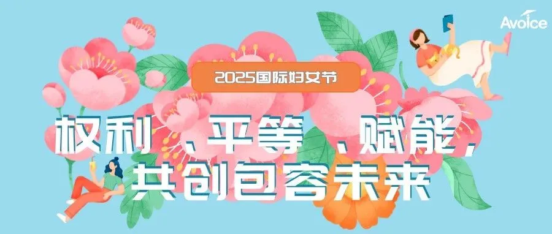
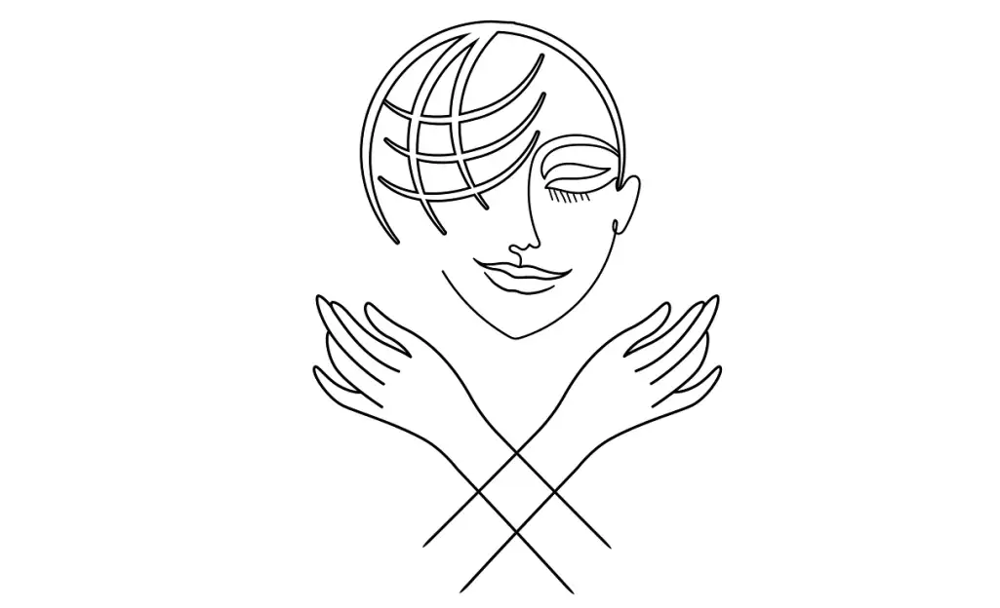
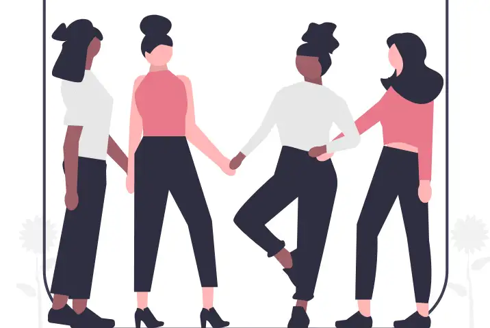
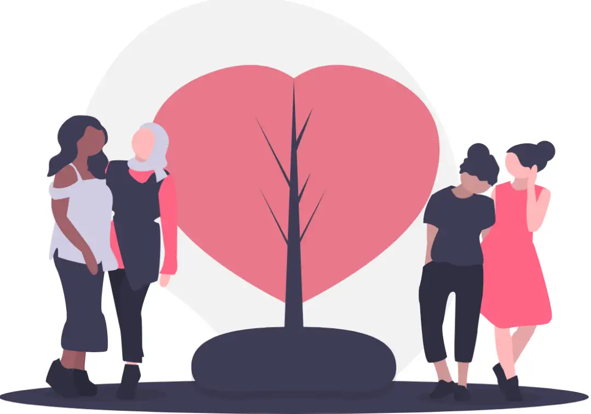

2025年3月8日，
我们迎来了第115个国际妇女节。
根据联合国妇女署的倡议，今年的主题是——
“为所有妇女和女童：权利、平等、赋能”
（For ALL women and girls: Rights, Equality, Empowerment）。
社会进步，让每一位女性都能享有尊重与机会；
争取权利，让她们无需再为天赋之权据理力争；
追求平等，让她们不必总在前行路上步步自证；
赋予力量，让她们敢于以梦想为笔，书写人生。

图片来源 | pixabay
2025年也是《北京宣言》和《行动纲领》通过的第30周年。
自1995年第四次世界妇女大会通过《北京宣言》和《行动纲领》以来，全球在促进性别平等方面取得了显著进展。
然而，女性在社会、经济、政治等领域仍面临诸多挑战。世界经济论坛2024年发布的《全球性别差距报告》显示，全球性别差距已缩小68.5%，但按照目前的进展速度，仍需五代人的时间才能彻底消除性别差距，即到2158年才能实现全面的性别平等。
同时，《全球性别差距报告》也展示了很多值得关注、值得继续推动的现状：
1. 政治领域女性代表有所增加，但高层领导仍然受限
当下，女性参政的机会有所增加，或将推动全球性别平等的进一步改善。然而，尽管越来越多的女性进入政坛，全球范围内的政治和行业高层领导职位的女性占比仍然偏低，从而导致女性在参与政策制定和决策方面的比例偏低。
2.女性劳动力参与率回升，但行业间不平衡依然存在
随着全球经济复苏，女性劳动力参与率从疫情后的 62.3% 上升至 65.7%，表明女性在职场中的占比有所提高。然而，各地区和行业之间的性别差距仍然明显。数据显示，在大多数经济体和行业，女性的就业比例仍然低于男性，尤其是在薪资较高、决策权较强的领域，这种不平衡仍需进一步改善。
3. 科技行业女性比例上升，但关键职位仍然失衡
科技行业的性别差距虽有所缩小，但仍然显著。自2016年以来，人工智能工程领域的女性比例翻倍，表明该领域的女性人才正在增长。然而，在STEM（科学、技术、工程和数学）相关岗位上，女性仍然处于劣势，初级职位的女性占比仅 29%，高管职位更是低至 12.2%。此外，女性在人工智能、大数据、编程和网络安全等在线学习课程中的参与率仍低于31%，说明这一领域的性别鸿沟依然存在，提升女性的技能培训和职业发展机会仍是未来应关注的重点。

图片来源 | undraw
我们将持续行动！
在第115个国际妇女节到来之际，AWDPI愿携手志同道合的朋友们，进一步助力实现爱与平等共存的世界。
AWDPI亚裔女性国际发展计划是一家国际公益组织，致力于消除针对海外亚裔女性的歧视和性别暴力，并促进她们的赋能与发展，使海外亚裔女性在社会、经济、文化、教育等方面获得更多发展机会，帮助她们从弱势群体成长为推动社会进步的重要力量。
妇女节不仅是庆祝，更是推动改变的重要契机。
在妇女月期间，AWDPI 将举办 10 场线上线下活动，围绕女性权利、性别平等和自我赋能等议题展开深入讨论，与大家携手共进，为消除性别差距、推动性别平等贡献力量。
在这个重要的日子里，让我们共同关注并支持女性权益，呼吁更多的平等与包容。
愿每一位女性都能自由书写自己的故事，愿世界的天空因她们的存在更加辽阔。

图片来源 | undraw
参考资料：
1. 联合国妇女署. (2025). 国际妇女节主题：为所有妇女和女童——权利、平等、赋能. https://www.unwomen.org
2. 世界经济论坛. (2024). 全球性别差距报告 2024 (Global Gender Gap Report 2024). 世界经济论坛
https://www3.weforum.org/docs/WEF_GGGR_2024.pdf
* 注：本文所收录的信息仅用于分享交流，不代表Avoice的立场和观点
撰稿｜汤欣然
排版/封面｜欧渌好